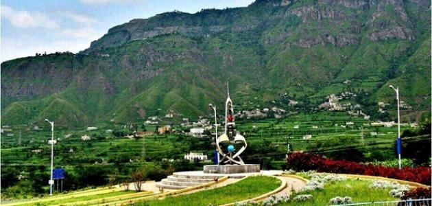

أجمل ما في اليمن

أجمل القصور و المساجد في اليمن
تضمّ اليمن العديد من القصور والمساجد المميّزة معمارياً وتاريخياً؛ ومن أبرزها ما يأتي:
-
قصر سيئون: يقع قصر سيئون في منطقة حضرموت التاريخية ويعود إلى أحد سلاطينها، ويُعدّ هذا القصر من أكثر القصور تميّزاً في اليمن، وبُني في عشرينيات القرن التاسع عشر في موقع حصن سابق، كما عاش فيه السلطان الكثيري حتّى عام 1967م، وأصبح
بعدئذ بمثابة متحف أثريّ تاريخيّ
-
قصر دار الحجر: بُني قصر دار الحجر في ثلاثينيات القرن التاسع عشر على قمّة برجٍ صخري شاهق، ويبعد موقع القصر مسافة 15 كم عن مدينة صنعاء، وبنى يحيى محمد حامد الدين هذا القصر على أنقاض مبنى قديم وُجِد في أواخر القرن الثامن عشر،
ويتكوّن القصر من 5 طوابق؛ 3 طوابق منها مبنية فوق الصخر وطابقان مبنيان في الصخر، وجرى تحويل القصر فيما بعد إلى متحفٍّ يتميّز بمناظره الداخلية الجميلة، وروعة البناء الخارجيّ.
-
مسجد الصالح: سُمّي لاحقاً بمسجد الشعب، ويُعدّ أكبر مساجد اليمن، ويقع في الضواحي الجنوبية للمدينة على مساحة واسعة من الأرض، ويجمع بناء المسجد بين التميّز العمرانيّ اليمنيّ والإسلاميّ ليكون أحد أبرز المباني الحديثة في اليمن،
ويجدر بالذكر أنّ المسجد افتُتح في عام 2008م بحيث أصبح بإمكان أيّ شخصٍ زيارته بغضّ النظر عن دينه.
-
مسجد الملكة أروى: يُعدّ مسجد الملكة أروى من أقدم وأجمل المساجد الموجودة في اليمن، ويعود في بنائه لعام 1056م، وكان الهدف من بناء المسجد في البداية أن يكون قصراً، ثمّ أمرت الملكة اليمنية أروى بتحويله لمسجد وعليه سُمّي باسمها،
ويُعتبر المسجد شاهداً على الفنّ المعماريّ في تلك الحقبة الزمنية.
أجمل المناطق الطبيعية في اليمن
تضم اليمن العديد من المناطق الطبيعية الخلابة، ومن أهمّ هذه المناطق ما يأتي:
-
غابة جبل برع: تقع الغابة في منطقة الحديدة، وتمتدّ على 5 ارتفاعات من سلسلة جبلية جرانيتية، وهي آخر ما تبقّى من الغابات شبه الاستوائية الموجودة جنوب الجزيرة العربية
-
بئر علي: يقع في منطقة شبوة، وهو بحيرة تقع على فوهةٍ بركانية قديمة، ومياهها خضراء اللون.
-
آثار أقدام ديناصورية: تقع هذه الآثار بالقرب من منطقة مدار في صنعاء، ويُقدّر عمر هذه الآثار بما يُقارب 150 مليون سنة، وهي لأنواع مختلفة من الديناصورات.
-
كهف الجنيبة: يقع هذا الكهف في سقطرى اليمنية، ويمتاز بطول ممراته، حيث يبلغ طول ممراته المكتشفة 13,525 م، وهو أحد الكهوف العديدة الموجودة على الجزيرة.
-
شلال حلة بني الفضل: يقع الشلال في ذمار، وهو شلال كبير وله موقعان للغطس الرأسي، ويتجاوز إجمالي ارتفاعه أكثر من 400 م.
-
شاطئ قلنسية: يتميّز هذا الشاطئ على بحر العرب برماله البيضاء النقية، ولا يبعد كثيراً عن قلب منطقة سقطرى في قلنسية، حيث يقع بالقرب من بحيرة ديتواه التي تُطلّ على مناظر طبيعية خلابة.
-
أرخبيل سقطرى: يقع أرخبيل سقطرى في شمال غرب المحيط الهندي على بعد 250 كم من خليج عدن، ويتكوّن أرخبيل سقطرى من 6 جزر من ضمنها جزيرتين صخريتين تظهران على أنّهما امتداد للقرن الأفريقيّ، وأهمّ ما يُميّز الموقع تنوّعه البيولوجيّ
من حيوانات، ونباتات، وحياة مائية.
أجمل المدن القديمة في اليمن
تتميز اليمن بعراقتها التاريخية، حيث شهدت العديد من الحضارات المتعاقبة على مختلف الحقب الزمنية، لذلك فهي تضم العديد من المدن والمناطق التاريخية، ومن أهمّها ما يأتي:
-
منطقة جبل حراز: سُميّت هذه المنطقة نسبةً إلى اسم الجبال التي تقع عليها، وتحوي المنطقة على العديد من القلاع المرتفعة التي تضم مناظر طبيعية مدهشة، بالإضافة إلى أراضٍ زراعية، وتُعدّ منطقة جبل حراز من المناطق القليلة في اليمن التي
لم تتعرّض أراضيها للحروب كأغلب المناطق اليمنية القديمة.
-
مدينة كوكبان التاريخية: تقع المدينة على قمّة تلّ يصل ارتفاع إلى حوالي 3000 متر، وتقع في الشمال الغربي من اليمن، وتتميّز المدينة بمناظرها الطبيعية الخلابة، بالإضافة للجمال المعماري الذي يظهر على المساجد والمنازل فيها، وتعرّضت
المدينة عبر التاريخ لعدد من الحروب أدّت إلى تدميرها إلا أنّ سكانها أعادوا بناءها.
-
قرية ثلاء: تقع ثلاء في منطقة مدينة صنعاء، وهي أحد أجمل القرى التاريخية في المنطقة، والتي يعود تاريخها إلى القرون الوسطى، ويُحيط بالقرية جدار حجريّ على طول 2000 متر يضمّ 26 برجاً و9 بوابات، وتتكوّن القرية من أزقّة ضيقة تتواجد
فيها منازل رأسية تتكون من طوابق عدّة مبنية من الحجر الرملي، ويقارب عددها 600 منزل أغلبها يتشابه بالتصميم والبناء ممّا يمنح القرية طابعاً معمارياً فريداً.
-
مدينة زبيد التاريخية: تُمثّل مدينة زبيد العمارة المدنية والعسكرية القديمة في منطقة زبيد، ممّا يجعلها موقعاً أثرياً مميزاً، وكانت مدينة زبيد عاصمةً لليمن منذ بداية القرن الثالث عشر حتّى القرن الخامس عشر، كما كان للمدينة مكانة
عريقة بين الدول العربية والإسلامية؛ لأنّها تضم جامعة إسلامية كانت من أبرز جامعات زمانها.
-
مدينة شبام المسوّرة: تعود المدينة في بنائها للقرن السادس عشر، وهي مدينة مسّورة ومحصنة بجدران ضخمة، وتقع المدينة على أطراف مدينة حضرموت التاريخية بموقعٍ استراتيجي تمرّ منه أحد أهمّ طرق تجارة البخور والتوابل في المنطقة العربية
الجنوبية، وتميّزت المدينة سابقاً بمبانيها الشاهقة؛ حيث كانت نموذجاً حضارياً مميّزاً.
-
مدينة صنعاء القديمة: تُعدّ مدينة صنعاء من أعرق المدن التاريخية، حيث كانت مأهولةً منذ ما يقارب عام 500 ق.م، وأصبحت المدينة فيما بعد مركزاً رئيسياً لنشر الإسلام بين القرنين السابع والثامن، ويظهر تاريخها الإسلاميّ العريق في أبنيتها،
حيث تضم 103 مساجد، و14 حمّاماً، و6000 منزل، وجميعها بُينت قبل القرن الحادي عشر.
أجمل المكتبات والمتاحف في اليمن
تقع كلّ المكتبات الوطنية ومكتبات ميسوال في عدن، وتحتوي كلّ مكتبةٍ منها على 30,000 مجلّد، بينما يُوجد في مكتبات ميسوال المتنقلة حوالي 9000 مجلد، أمّا مكتبة الجامع الكبير في صنعاء فتضم حوالي 10,000 مخطوطة إلّا أنّها غير متاحة لجمهور المكتبة، وتتبع للمجلس
الثقافي البريطاني مكتبتان إحداهما في عدن تحتوي على 3000 مجلد، والأخرى في صنعاء وتضمّ 104,000 مجلد.
يُوجد العديد من المتاحف التاريخية في اليمن، ومن أهمّها المتاحف الوطنية في عدن وصنعاء، ويعرض المتحف الوطني في عدن بشكلٍ أساسيّ حضارات ما قبل الإسلام، وتضمّ عدن أيضاً المتحف الحربي الذي يقع في مدينة كريتر العسكري، ومتحف آخر شعبي، كما يُوجد متاحف محلية أخرى
في كلّ من تعز وظفر.